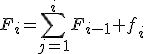

Estas dos variables se trabajan en las tablas de la misma forma ya la característica de estudio tiene un número limitado de posibles valores (numéricos o cualitativos). Veamos algunas magnitudes que nos permiten resumir la información de la estadística:
Frecuencia absoluta: es el número de veces que se repite cada dato. Generalmente los datos se representan como
y a sus frecuencias absolutas se denotan con f(xi) o fi. Se cumple que si interviene n individuos en la encuesta
Frecuencia relativa: es el cociente entre la frecuencia absoluta y n, número de individuos de la muestra. Se denota como hi o fri
F_i = \sum_{j=1}^{i} F_{i-1} + f_i.
El porcentaje: que representa la proporción en tanto por cien de cada una de los datos. Se representa como pi, y se calcula como pi=fri·100
Frecuencia relativa acumulada (solo variables cuantitativas): es el número de elementos con valor de x menor o igual que xi. Se denota como Fi, y se calcula como

F_i = \sum_{j=1}^{i} F_{i-1} + f_{i}
Frecuencia relativa acumulada (sólo variables cuantitativas): es cociente de la frecuencia absoluta acumulada entre n. Se denota como Hi y se cumple que su valor se calcula como
P_{i} = \sum_{j=1}^{i} p_j = H_i \cdot 100
Porcentaje acumulado (sólo variables cuantitativas): es la suma de todos los valores porcentuales hasta esa categoría. Se denota como Pi y se calcula de diferentes maneras.
Un ejemplo numérico sería:
Número de hijos={1, 1, 1, 1, 1, 2, 2, 2, 2, 2, 2, 2, 2, 3, 3, 3, 3, 4, 4, 5}}
| Xi |
fi |
hi |
pi |
Fi |
Hi |
pi |
| 1 |
5 |
0.25 |
25% |
5 |
0.25 |
25% |
| 2 |
8 |
0.4 |
40% |
13 |
0.65 |
65% |
| 3 |
4 |
0.2 |
20% |
17 |
0.85 |
85% |
| 4 |
2 |
0.1 |
10% |
19 |
0.95 |
95% |
| 5 |
1 |
0.05 |
5% |
20 |
1 |
100% |
| TOTAL |
20 |
1 |
100% |
|
|
|